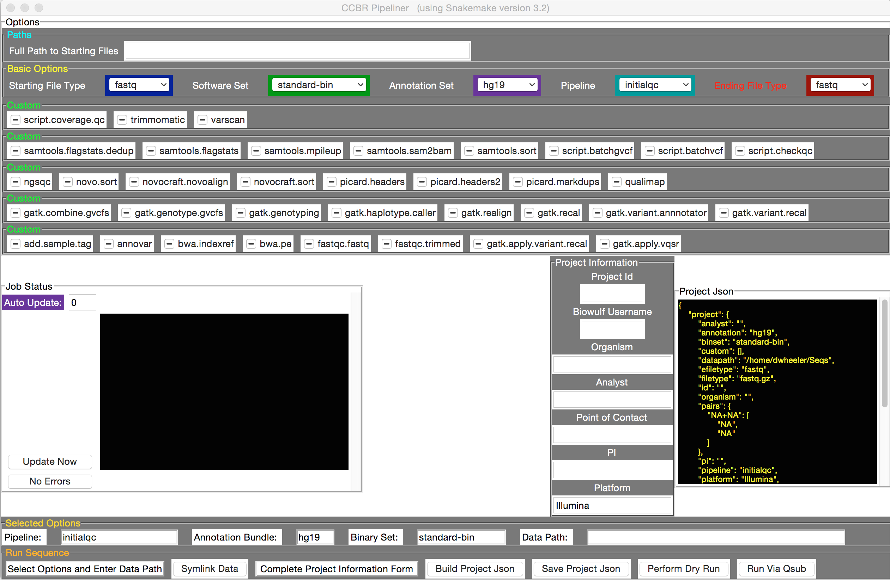
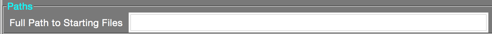
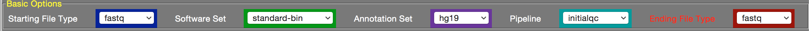
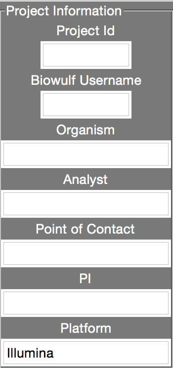
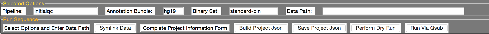

ExomePipeline has been developed to work on the Biowulf cluster. Any ohter cluster and this time will surely fail.
1. SSH to the Biowulf Cluster
ssh - Creates a connection with Biowulf.
Launch Macintosh's Terminal
# This is the pretend terminal window
% ssh -X your-user-name@biowulf.nih.gov
% password: enter password
% cd directory
% python pipeliner.py

2. Creating Symlinks (symbolic links) to the data.

Set the "Full Path to Starting Files" by entering the absolute file path to directory containing the input files (fastq, bam, etc.).
This doesn't create a new copy of the data. It simply provies an alias or shortcut path to the files. For example: /data/project/DATA
3. Set the basic options.

Set the "Full Path to Starting Files" by entering the absolute file path to directory containing the input files (fastq, bam, etc.).
Starting File Type - This along with the Entry of Full Path to Starting file will define the Symlinks.
Software Set - This allows for other preset parameters for this pipeline.
Annotation Set - Select the build used for reference and annotation. Human(hg19) and Mouse(mm10) currently supported.
Pipeline - Choose pipeline to use.
Ending File Type - Choose the resulting file format.
4. Set Project Information.

Project Id - For example CCBR123.
Biowulf Username
Organism
Analyst
Point of Contact
PI
Platform - Illumina for example.
4. Review Selected Options and Run Sequence .

Review your selected options: Pipeline, Annotation Bundle, Binary Set and Data Path.
Symlink Data - This button will create/write symbolic links to the data files.
Build Project Json - This button will build the Project Json and display in the window above.
Save Project Json - This button will save/write the project.json to the directory.
Perform Dry Run - This button perform dry run to insure all is correct.
Run Via Qsub - This button will submit job via Qsub. The job is in the queue to be run.